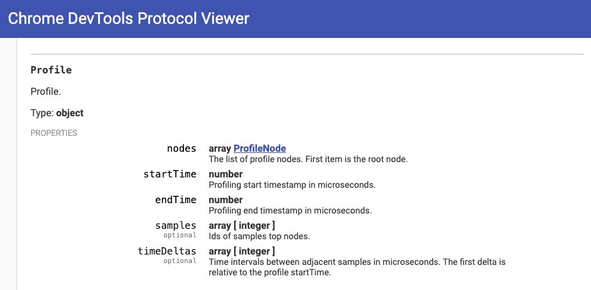

Naenie (Many in high valyrian words) tries to generate valid code mutations for JavaScript code using calls between WASM and JS as the mutation operator.
Taking a JavaScript input file we can obtain the abstract syntax tree (AST) for it. Babel parser output an AST structure base on () spec. Basically, this tool extends those nodes with extra information. First, we analyze the static information from the JavaScript code like literal numbers, strings, booleans, etc. After that, we evaluate an instrumented version of the input code with some provided code to explore the script execution, resolving types in nodes evaluation. Later, the subtrees that can be translated to a Web Assembly Text (WAT) function are detected. The final step is to generate Web assembly binary code (WASM) and validate it.
The final output is a JavaScript file with its WASM complement.
Also, we implement a "sandbox" wrapper to test the generated code in a browser or node with some workload with the two implementations: the original one and the mutated one.
Basically, we have three inputs for the tool:
And two outputs:

The objective of this tool is to find subtrees in the script AST and then substitute them for a equivalent call to WASM code. Due to JavaScript dynamic behavior, we are focusing to arithmetic expression up to date.
We defined three principal parameters: min-size (min subtree size to replace), max-size (max subtree size to replace) and probability-threshold ( [0, 1] probability to translate the subtree ).
The preliminary analysis of the tools testing shows a overhead invocating WASM functions.
The main reason is to ensure that the arithmetic subtree return numeric values indeed (boolean values are mapped as int32 values, 0 and 1), watching for "large" integers and "large" floats in runtime evaluation to create a correct mapping between them and the WASM numeric types.
If one operator in the arithmetic subtree (always binary subtree) cannot be accessed from the WASM context then this subtree is passed to the translated subtree as a function parameter, for example:
var a = 1 + a[0]
Is translated to
var a = ww.Wrapper(1, a[0])
(function $Wrapper(param i32, param i32)
get_local 0
get_local 1
i32.add)
We need to care about boolean operations shortcut too //https://github.com/dcodeIO/webassembly/issues/26 Javascript does not support int64 function signature for WASM up to date
This tool its extending right now, to cover calls from WASM code to the JavaScript one. Trying to cover a complete JavaScript translation.
You can use two options to run the mutator:
npm run ts src/main.dev.ts <target> <coverage> <workload>npm run compile and then execute the compiled code node dist/naenie.jsHelp output
-v output the version number
-t --target <target> Target script
-c --coverage <coverage> Coverage script
-w --workload <workload> Workload script
-m --minumum <minimum> Minimum tree size to translate
-M --maximum <maximum> Maximum tree size to translate
-u --threshold <threshold> Probability to translate subtree
-s --sandbox <sandbox> Sandbox wrapper: 'node' or 'browser'
-h, --help output usage information
Run python tests/run_all.py to execute the complete pipeline to mutate and profile target test scripts.
We open and profile the both, mutated and original codes, with the workload script. This process is done in an automated way using the 'chrome-remote-interface' and the 'chrome-launcher' node packages. The profiling output file protocol is showed below:
{
nodes: {
id: number,
callFrame: {
"functionName": string,
scriptId: string,
url: string,
lineNumber: number,
columnNumber: number
},
hitCount: number,
children: number[],
positionTicks?: {
line: number,
ticks: number
}[]
}[],
startTime: number,
endTime: number,
samples: number[],
timeDeltas: number[]
}
From https://chromedevtools.github.io/devtools-protocol/tot/Profiler/#type-Profile

Test subjects
Mutation output
Mutated candidate performance and overhead